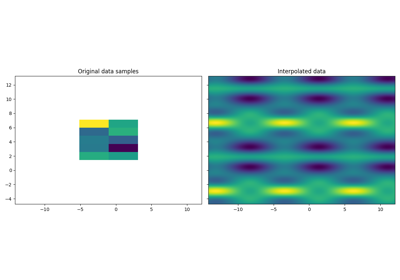
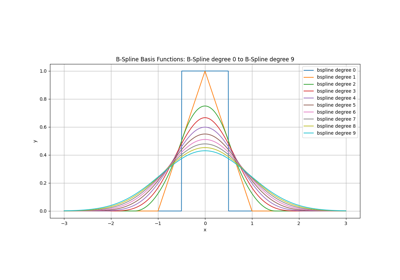
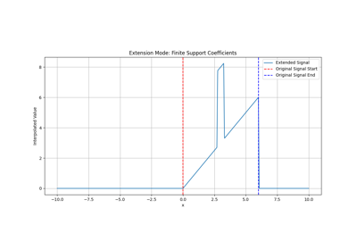
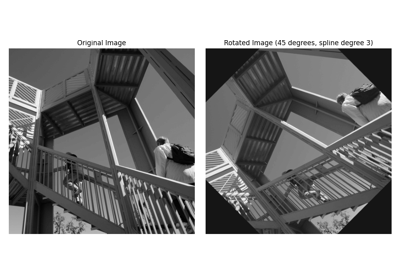
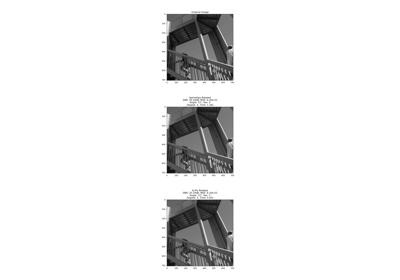

Examples#
Explore the example gallery to see how to use the SplineOps library.

First steps with the TensorSpline API
First steps with the TensorSpline API

Plotting spline bases

Displaying signal extension modes
Displaying signal extension modes

2D image rotation

2D image rotation performance